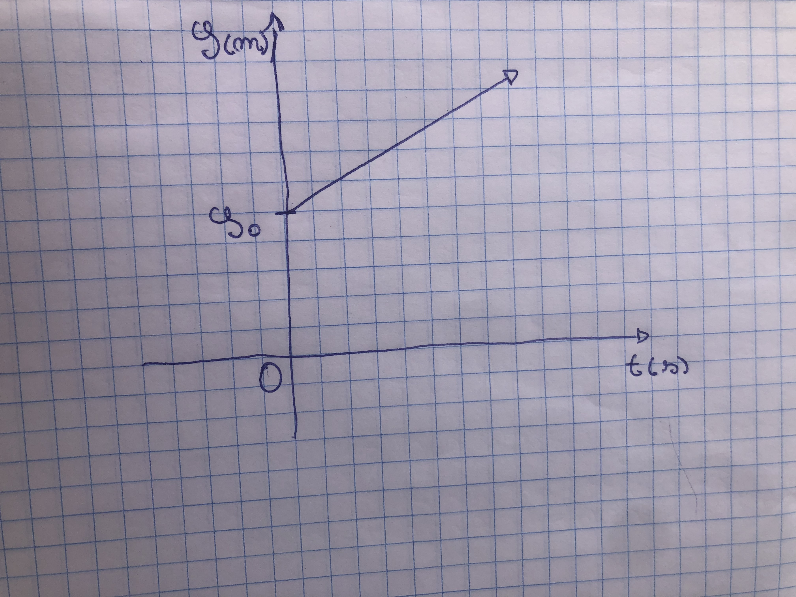
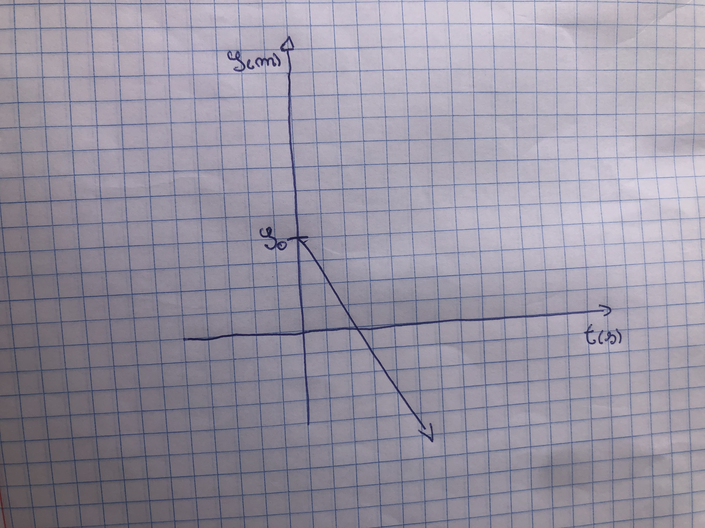
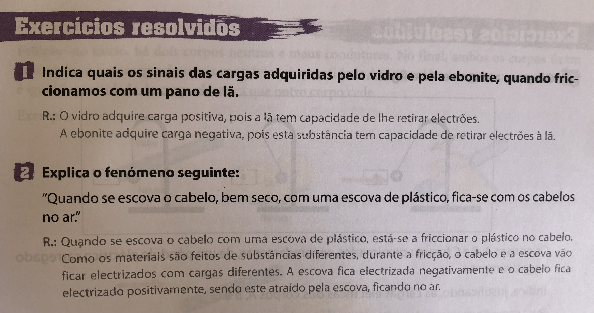
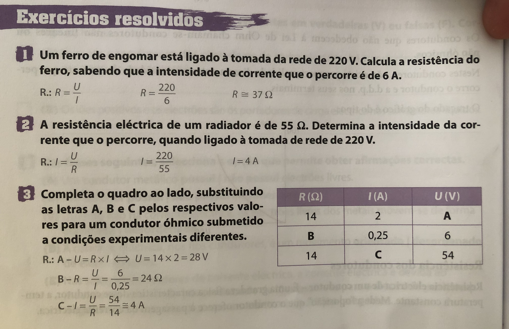
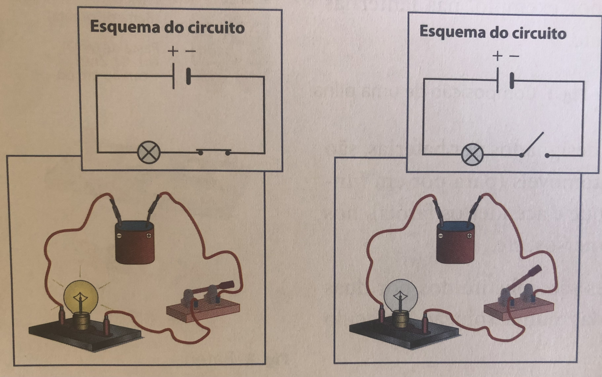
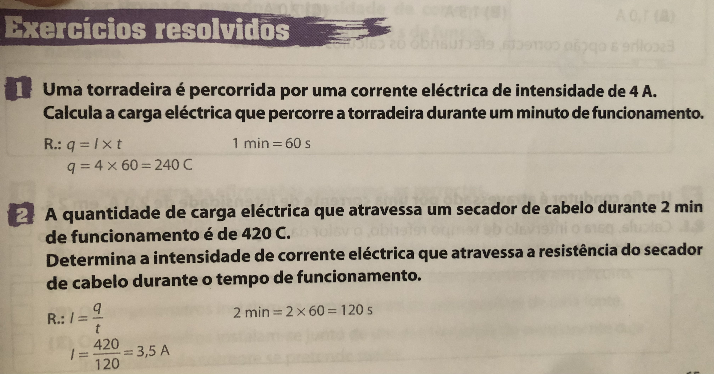
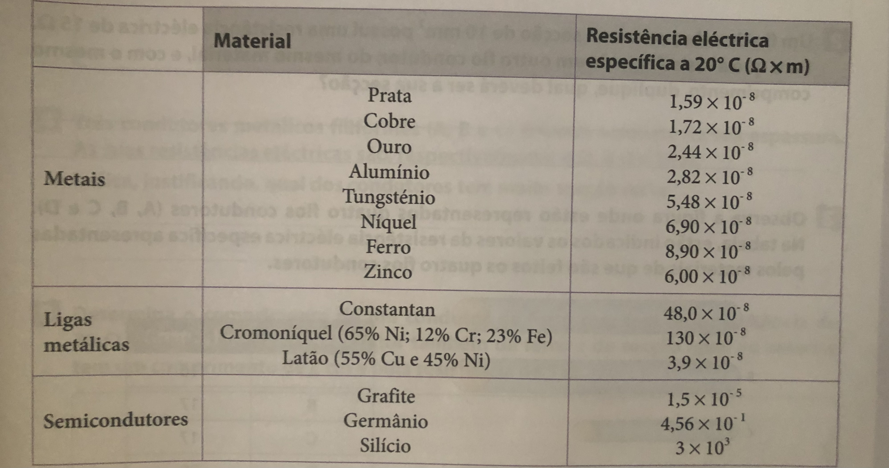
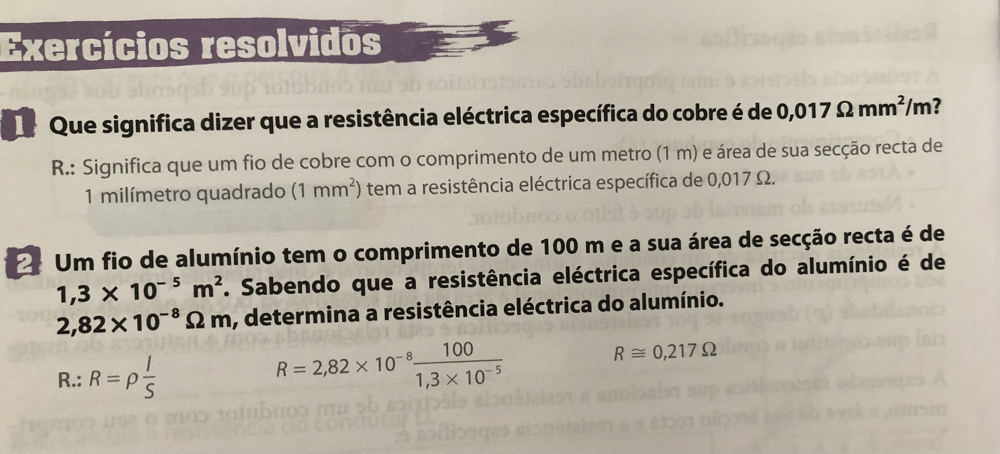
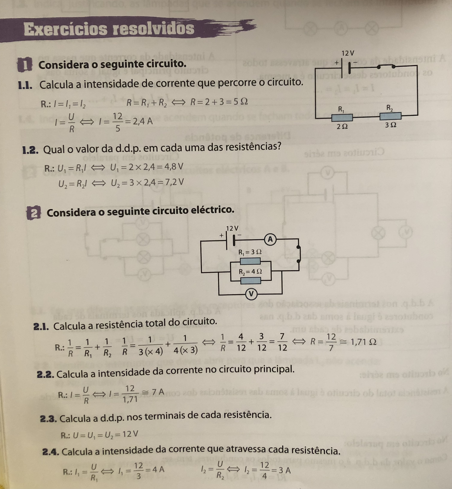

Todos os dias proximos ou distante observamos alguns corpos em movimento e outros não.
Assim, o movimento em fisica é uma das propriedades muito importante da materia e todos os corpos na natutureza encontra-se em constante movimento
Movimento: é a mudança de posição de um corpo em relação a um referencial no decorrer do tempo.
Referencial: é um corpo ou ponto que serve de referencia no estudo do movimento de outro corpo. O facto de se considerar um corpo esta em movimento ou reposo depende sempre do referencial escolhido.
Tudo oque existe realmente no universo na terra e fora dela, tudo oque podemos ver, apalpar e sentir atraves dos nossos orgãos sensoriais e designado pela ciencia como materia.
Materia: é tudo oque atuando sobre os nossos orgãos sensoriais produzem empressões.
Trajectoria: é o conjunto doa sucessivas posições ocupadas pecorpo no seu movimento, em relaçao a um diferencial.
As trajectorias podem ser Rectilineas ou Curvilineas
As trajectorias Curvilineas podem ser circulares ou elepticas
Quando estas em casa sentado a ver televisão encontraste em repousoem relação ao seguintes referenciais:
1.R: em relaçao a casa estamos em repouso.
2.R: em relaçao ao sol estamos em movimento.
3.R: em relação ao sofá estamos em repouso
Indica o tipo de Trajectoria (rectilinea, eliptica ou circular) em cada umad ads seguintes situações.
1.R: circular
2.R: eliptica
Tal como referido anteriormente, um corpo está em movimento, em relação a um determinado referencial, sempre que a sua posição varia ao longo do tempo. Neste contexto, pode-se falar em duas grandezas distintas:
Distancia percorrida(d): é a soma dos valores absolutos dos deslocamentos.
A distancia percorrida é calculada mediante a segunte formula:
d=|S1|+|S2|+...+|Sn|
d=|△S1|+|△S2|+...+|△Sn|
A unidade do Sistema Internacional de distância percorrida e de deslocamento é o metro (m).
OBS: quando nos dão apenas em deslocamento a formula da distância fica reduzida à:
d=|S| ou d=|△S|
Deslocamento(S ou △S): é a variação da posição de um corpo num determinado periodo de tempo.
Sua fórmula é a seguinte:
S= Xf+Xi ou S=X-Xo
Onde:
Obs:Se o deslocamento for nulo, a distância percorrida pode não ser nula;
Um mesmo deslocamento pode corresponder a distâncias percorridas diferentes;
Se o movimento for rectilíneo e se não houver mudança de sentido, o valor do deslocamento é igual à distância percorrida.
No nosso dia-a-dia, utilizamos frequentemente o termo "velocidade". No entanto, por vezes, fazemo-lo incorretamente e confundimo-lo com o conceito de rapidez média, apesar de serem duas grandezas distintas.
A rapidez média (rm) é uma grandeza escalar que nos dá a distância percorrida por um corpo, em cada unidade de tempo.
A sua fórmula é a seguinte:
rm= d/△t
Onde:
rm= rapidez media (m/s) no SI
d= distância percorrida (m) no SI
△t= variação do tempo (s) no SI
A velocidade media é uma grandeza vectorial, que corresponde ao deslocamento do corpo, em cada unidade de tempo.
A sua fórmula é a seguinte:
vm= △S/△t; △S= S-So e △t= t-to
Onde:
vm= velocidade média (m/s) no SI;
△S= deslocamento (m) no SI;
△t= variaçãodo tempo (s) no SI.
Quando nos deslocamos com uma velocidade de valor constante e segundo uma trajetória rectilínea, estamos perante um movimento retilíneo uniforme.
O Movimentos Rectilineo (M.R.U) pode ser:
OBS: Quando dois corpos se encontram os seus espaços seram iguais.
O esboço de um grafico (S*t) a partir da função horaria é feita calculando-se os valores dos espaços para alguns instantes convenientes. Quando o movimento é uniforme basta apenas dois ou tres valores do espaço com os respectivos tempos determinando dois dos três pontos pois a função é do primeiro grau(S=So+v.t).
1o caso: velocidade positiva (v>0)
Neste caso, as posições crescem algebricamentebcom o tempo, isto é, o corpo caminha no sentido positivo da trajectoria.
2o caso velocidade negativa (v0)
Neste caso as posições de crescem algebricamente com o tempo, isto é, o corpo caminha no sentido negativo da trajectoria. o grafico representativo é:
Quando um corpo se movimenta, em relação a um determinado referencial, o valor da velocidade pode variar com o decorrer do tempo.
O modo como a velocidade varia, por unidade de tempo, é determinado através de uma grandeza física chamada aceleração média (am).
Tal como a velocidade, a aceleração é uma grandeza vectorial, caracterizada por um valor, uma direcção e um sentido.
A sua formula é a seginte:
am=∆V/∆t ou am= V-Vo/t-to
Onde:
MRUV é o movimento onde ocorre variaçoes de velocidade iguais em tempos iguais, ou seja, é o movimento em que a aceleração é constante.
o MRUV pode ser:
Movimento retilíneo uniformemente acelerado: onde o módulo da velocidade aumenta e os vectores aceleração e velocidade têm o mesmo sentido.
Movimento rectilíneo uniformemente retardado: onde o módulo da velocidade diminui e os os vectores aceleração e velocidade têm sentidos contrários.
Equações das velocidades é dada pela seguinte expressao:
V=Vo+a.t
Obs: quando um corpo parte do repouso a sua velocidade inicial é 0, a equação é dada da seguinte forma:
V=a.t
equaçao dos espaços: é dada pela seguinte expressão:
S=So+Vo.t+1/2.a.t2
Obs: quando nao nos informamsobre o espaço inicial ele é nulo (So=0)
equação de torricelelli é dada pela seguinte expressão
V2=Vo2+2.a.∆S
Obs:A e quaçao de torricelli é utilizada quando não nos informam sobre o parametro.
No movimento retilíneo uniformemente variado, e tal como referido para o movimento rectili-neo uniforme, o módulo do deslocamento pode ser calculado determinando a área compreendida entre a linha do gráfico e o eixo das abcissas obtida no gráfico velocidade-tempo.
S= Vo+V/2*∆t
A=b+B/2*h
Quando deixamos, simplesmente, cair um corpo ou quando o lançamos ao ar na vertical, se a resistência do ar for desprezável, o corpo fica apenas sujeito à força gravítica. Chamamos, por isso, aos corpos de graves, e dizemos que estão em queda livre, independentemente de estarem a cair ou a subir.
Neste contexto, a aceleração a que estão sujeitos é a aceleração da gravi-dade, que à superfície da Terra é de g = 9,8 m/s2.
Nestas condições, os corpos deslocam-se com um movimento retilíneo uniformemente variado.
As equações deste moviento sao:
t=√2.h/g
Usando a equaçao de torricelli temos:
V=√2.g.h
A eletrostática é a parte da Física que estuda os fenómenos eléctricos resultantes das cargas eléctricas em repouso.
As cargas eléctricas são uma propriedade da matéria responsável pelas forças de atração ou repulsão entre dois corpos electrizados.
Há dois tipos de carga: positiva e negativa.
Toda a matéria é constituída por átomos. Os átomos são partículas eletricamente neutras constuídas por:
Nucleo que esta dividido em protões(carga electronica) e Neutrões(sem carga electronica)
Nuvem electronica onde podemos encontrar os electroes que possuem carga electronica
os corpos podem estar:
Se um corpo neutro perde electrões, transforma-se num corpo eletrizado positivamente.
Se um corpo neutro ganha electrões, transforma-se num corpo electrizado negativamente.
As partículas que se podem deslocar ao longo de um corpo, e até sair dele ou entrar, são os electrões. Estes são os responsáveis pela electrização de um corpo.
Os corpos electrizados podem atrair-se ou retrair-se em cargas do mesmo tipo.
Corpos bons condutores: são materiais nos quais as cargas electricas se deslocam com facilidade.
Ex: todos os metais sao bons condutores de cargas electricas.
Podemos definir a carga electrica de um corpo pela seguinte formula:
Q=n.e
Onde:
Obs: A unidade no SI da carga electrica é coulomb(c), mas as vezes aperece os submultiplos:
Para electrizar um corpo, podemos usar um dos seguntes pocessos:
Fricção: no início, há dois corpos neutros e maus condutores. No final, ambos os corpos ficam carregados e com cargas de sinais contrários.
Contacto: o corpo que se pretende carregar está neutro e é bom condutor. Usa-se um corpo auxiliar carregado antecipadamente. No final, fica o corpo carregado com carga do mesmo sinal da do corpo auxiliar.
Influência: o corpo que se pretende carregar está neutro e é bom condutor. Usa-se um corpo auxiliar carregado antecipadamente. No final, o corpo fica carregado com carga de sinal contrário à do corpo auxiliar.
Só existe corrente eléctrica num condutor se houver uma diferença de potencial entre dois pontos desse condutor.
A diferença de potencial (U) entre dois pontos de um condutor é a "quantidade" de energia transferida para esse condutor, por unidade de carga que o atravessa. É habitual usar a abreviatura d.d.p. para referir a diferença de potencial.
A Unidade SI de d.d.p. é o volt, cujo símbolo é V.
Voltímetros - são os aparelhos que permitem medir a d.d.p. Estes aparelhos intercalam-se sempre em paralelo com o condutor cuja d.d.p. se pretende medir.
Lei de ohm: A d.d.p nos terminais de um condutor filiforme e homogéneo, a temperatura constante, é directamente proporcional a intensidade da corrente que o percorre.
Resistência eléctrica de um condutor- É uma grandeza física característica desse condutor, a temPeratura constante, Mede a "oposição" que o condutor oferece à passagem da corrente eléctrica. Relaciona-se com a diferença de potencial (U) aplicada nos terminais do condutor e a intensidade da corrente que o percorre (1).
R=U/I
A unidade SI de resistência eléctrica é o ohm(Ω).
1Ω=1V/1A
A corrente eléctrica é um movimento ordenado e orientado de partículas com carga eléctrica por acção de forças eléctricas.
Nos condutores sólidos, a corrente elétrica é o movimento ordenado e orientado de electrões que se deslocam da extremidade do condutor que está carregada mais negativamente para a outra extremidade.
Nas soluções líquidas condutoras de corrente, a corrente eléctrica é o movimento orientado de iões, deslocando-se os iões negativos para o eléctrodo positivo e os iões positivos para o eléctrodo negativo.
As fontes de corrente eléctrica são aparelhos que servem para criar e manter um desequilíbrio eléctrico entre as extremidades de um condutor - são geradores de corrente eléctrica permanente.
Estes aparelhos possuem dois terminais designados por pólos (o pólo negativo, onde se acumulam cargas negativas, e o pólo positivo, onde se acumulam cargas positivas) que originam um campo eléctrico.
Pilha seca - é o elemento galvânico com maior aplicação no dia-a-dia. As pilhas são usadas, por exemplo, nas lanternas portáteis, em rádios, brinquedos, etc.
Acumuladores - vulgarmente designados por baterias, são fontes muito utilizadas nos automóveis (para pôr em funcionamento o motor de arranque e acender os faróis), nos submarinos quando estão submersos, etc.
Circuito eléctrico - caminho para a corrente eléctrica, isto é, sistema físico através do qual há transferência de energia e transporte de cargas elétricas.
Componentes de um circuito eléctrico:
Ex:

Intensidade da corrente eléctrica (I) - quantidade de carga eléctrica (g) que atravessa uma secção recta de um condutor, na unidade de tempo (t).
A sua expressao matematica é a seguinte:
I=q/t e q=I.t
A unidade SI de intensidade de corrente é o ampere(A)
1 ampere= 1coulomb/1segundo ou 1A= 1C/1s
A intensidade da corrente eléctrica também se pode exprimir em múltiplos e submúltiplos do ampere. Por exemplo:
Amperímetros - São aparelhos que permitem medir a intensidade da corrente eléctrica.
A resistência eléctrica é uma propriedade característica de um condutor que depende dos seguintes factores:
A resistência eléctrica de um condutor, a uma dada temperatura, é diretamente proporcional ao seu comprimento e inversamente proporcional à área da sua secção recta. A constante de proporcionalidade (p) designa-se por resistência específica e está relacionada com a natureza do material que constitui o condutor.
A resistência eléctrica é uma propriedade característica de um condutor que depende dos seguintes factores:
A resistência eléctrica de um condutor, a uma dada temperatura, é diretamente proporcional ao seu comprimento e inversamente proporcional à área da sua secção recta. A constante de proporcionalidade (p) designa-se por resistência específica e está relacionada com a natureza do material que constitui o condutor.
A expressão matemática que relaciona a resistência eléctrica de um condutor com o seu compri-mento, a área da sua secção recta e a resistência específica é:
R=p.l/S
p=R.S/l
A sua unidade no SI é Ωxm
 Neste tipo de circuito, ha diversos "caminhos" (derivações ou ramificações) para a passagem da corrente electrica.
A parte do circuito que contem a fonte designa-se por circuito principal ou ramo principal, a as que contêm os receptores designam-se por derivações ou ramificações, a intencidade da corrente que passa no circuito principal é igual a soma das intencidades das correntes nas derivações.
I=I1+I2+I3...
A d.d.p aplicada nos terminais de cada condutor do circuito é a mesma.
U=U1=U2=U3...
No circuito em pararlelo o inverso da resistencia total é igual a soma dos inversos das resistencias associadas.
1/Rt=1/R1+1/R2+1/R3...
Neste tipo de circuito, há apenas um "caminho" para a passagem da corrente electrica.
A intencidade da corrente que atravessa todas deste circuito é a mesma.
I=I1=I2=I3...
A d.d.p nos terminais dos condutores é igual a soma da d.d.p na extermidade de cada um.
U=U1+U2+U3...
No circuito em serie a resistencia total do circuito é igual a soma das dos condutores associados na serie
R=R1+R2+R3...
Exemplo de circuito electrico paralelo e em serie